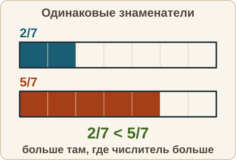
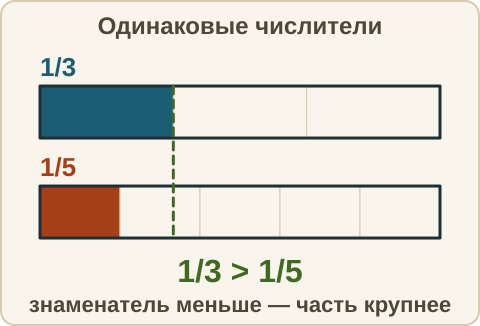
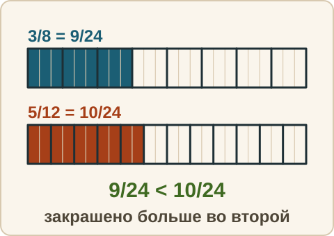
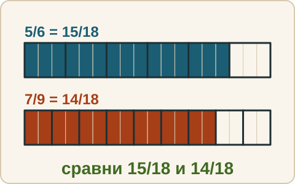
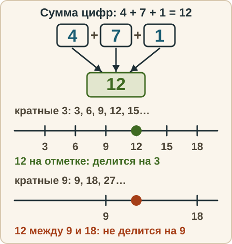
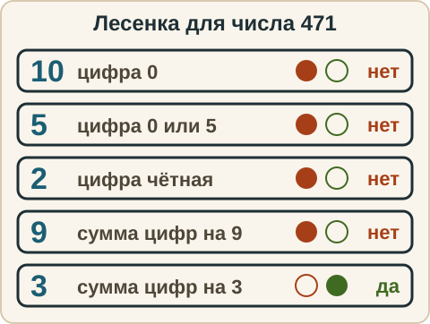

Математика: база · занятие 5Сравнение дробей и общий знаменатель
Цель: ты сравниваешь две дроби, находишь наименьший общий знаменатель и дополнительные множители, приводишь дроби к общему знаменателю, проверяешь делимость на 3 и на 9 по сумме цифр. Это основа для сложения и вычитания на следующем занятии. Ответы и подсказки спрятаны: сначала реши сам, потом нажми кнопку.
Как записывать ответ. Число — целое число. Дробь — через черту и сокращённая до конца, например 3/4. Смешанное число — целая часть, пробел, дробь, например 2 3/4. Знак — один символ: <, > или =. Несколько дробей — через запятую. Ответ «да» или «нет» — словом.
Вспомнить
Без подсказок, сразу проверка. Отмечай, на чём споткнулся, — в журнал.
- Сократи 12/18.
- 7/4 — запиши смешанным числом.
- 2 3/5 — запиши неправильной дробью.
- (−4) · 6
- 12 · 15
- 9 + 2 · (8 − 5)
- Делится ли 6340 на 5?
- Делится ли 2915 на 10?
Вопросы 7 и 8 — без карточки: ответь и объясни вслух своими словами, почему так. Потом сверь ответ со своей карточкой и исправь её, если ошибся.
Беглость: сократить и достроить
Две игры. Ошибся — пример вернётся: попробуй ещё раз. Без таймера.
Игра 1. «Сократи быстро».
- Сократи 4/8.
- Сократи 6/9.
- Сократи 10/20.
- Сократи 12/16.
- Сократи 15/45.
- Сократи 14/35.
Игра 2. «Дострой дробь». Впиши числитель вместо вопросительного знака. Объясни словами: на сколько умножили знаменатель, на столько же умножаем числитель.
- 1/2 = ?/6
- 2/3 = ?/9
- 3/4 = ?/12
- 5/6 = ?/18
Правило
Три случая. Как сравнивать две дроби, зависит от того, какие у них числители и знаменатели.
1. Одинаковые знаменатели. Части одного размера, значит больше та дробь, у которой числитель больше: 2/7 < 5/7.

2. Одинаковые числители. Берём одно и то же число частей, но размер частей разный. Чем на большее число частей разделили целое, тем эти части мельче. Значит, больше та дробь, у которой знаменатель меньше: 1/3 > 1/5.

3. Разные знаменатели и разные числители. Приводим дроби к одному знаменателю. Только тогда можно сравнивать числители.
Наименьший общий знаменатель (НОЗ) — наименьшее число, которое делится на оба знаменателя. Как найти: выписываем числа, которые делятся на больший знаменатель (кратные), и берём первое, которое делится ещё и на меньший.
Дополнительный множитель — число k, на которое умножаем числитель и знаменатель дроби, чтобы получить НОЗ. Он равен НОЗ : знаменатель дроби. Само преобразование: a/b = (a · k)/(b · k). Здесь a — числитель, b — знаменатель, k — дополнительный множитель. Значение дроби не меняется (занятие 4).
Из жизни. Что больше, 3/8 пиццы или 5/12 такой же пиццы? Куски разного размера, на глаз не видно. Режем обе пиццы на одинаковые мелкие куски, и можно считать.

Разобранный пример
Сравни 3/8 и 5/12.
- Больший знаменатель 12. Кратные 12: 12, 24. 12 на 8 не делится. 24 : 8 = 3, делится. НОЗ = 24.
- Дополнительные множители: для 3/8 — 24 : 8 = 3; для 5/12 — 24 : 12 = 2.
- 3/8 = (3 · 3)/(8 · 3) = 9/24. 5/12 = (5 · 2)/(12 · 2) = 10/24.
- 9/24 < 10/24, значит 3/8 < 5/12. Ответ: 3/8 < 5/12.
С подсказкой
Решай сам. Подсказку открывай, только если застрял.
- Сравни 5/6 и 7/9.

Сам
Сначала приведи дроби к общему знаменателю, если он разный. Два раза не сошлось — появится кнопка «Показать решение».
- Знак: 3/7 и 5/7.
- Знак: 4/9 и 4/5.
- Знак: 2/3 и 5/8.
- Знак: 7/10 и 11/15.
- Расположи по возрастанию: 1/2, 2/5, 3/4.
- Найди НОЗ для 5/6 и 3/10 и приведи обе дроби к нему.
Ловушка
Ловушка. «1/5 больше 1/3, потому что 5 больше 3». Это сравнение знаменателей как обычных чисел. Знаменатель говорит, на сколько частей разделили целое, а не сколько частей взяли. Чем больше знаменатель при одинаковом числителе, тем мельче части. Проверка картинкой или жизнью: пирог на 5 человек делится на более мелкие куски, чем пирог на 3. В б) проверь именно это. Проверь себя: ты сравнивал числители или знаменатели?
Признаки делимости на 3 и на 9
Мини-блок на 4 минуты. Зачем он: признаки помогают сокращать дроби и искать общий знаменатель.
Признаки по сумме цифр. Тут смотрим не на последнюю цифру, а на сумму всех цифр. Число делится на 3, если сумма его цифр делится на 3. Число делится на 9, если сумма его цифр делится на 9. Если число делится на 9, оно делится и на 3 (9 = 3 · 3); наоборот — не всегда. Лесенка проверки теперь из пяти ступенек в фиксированном порядке: 10 → 5 → 2 → 9 → 3. Первые три смотрят на последнюю цифру, две последние — на сумму цифр.
- Пример: 471 (4 + 7 + 1 = 12). Сумма 12 делится на 3 (12 : 3 = 4), поэтому 471 делится на 3. Сумма 12 не делится на 9, поэтому 471 не делится на 9.


Зачем: сокращение. Сократи 63/81. Числа 63 (6 + 3 = 9) и 81 (8 + 1 = 9): сумма цифр делится на 9, значит оба числа делятся на 9. Делим числитель и знаменатель на 9: 63/81 = 7/9.
Зачем: общий знаменатель. Ищем число, которое делится на 12 и на 9. Берём кратные 12: 12, 24, 36, 48, 60, 72. Проверяем признаком на 9: 36 (3 + 6 = 9) подходит, а 48 (4 + 8 = 12) не делится на 9, потому что 12 не делится на 9. НОЗ чисел 12 и 9 равен 36.
Сам (признаки).
- Делится ли 738 на 9?
- Делится ли 524 на 3?
- Сократи 54/90.
Ловушки. 1) «Оканчивается на 3, значит делится на 3» — неверно. 43 оканчивается на 3, но 43 (4 + 3 = 7) не делится на 3. А 51 (5 + 1 = 6) оканчивается на 1 и делится на 3. Для 3 смотрим на сумму цифр. 2) Путают 3 и 9. 12 (1 + 2 = 3): сумма делится на 3, поэтому 12 делится на 3, но 12 не делится на 9. Спроси себя: на какое число делится сумма — на 3 или на 9? 3) Число 0 делится на 3 и на 9 (0 : 9 = 0, сумма цифр 0).
Смесь
Вперемешку: дроби, порядок действий, знаки, таблица. Форму ответа подсказывает серый образец в поле.
- Сократи 21/28.
- 11/3 — запиши смешанным числом.
- Что больше: 5/9 или 4/7?
- −9 − 4
- 36 : 4 · 3
- 45 · 12
- Расположи по возрастанию: 3/4, 2/3, 5/6.
- Найди НОЗ чисел 4 и 10.
- Приведи 3/5 к знаменателю 35: чему равен числитель?
- Делится ли 6174 на 9?
- Сократи 57/87.
Журнал
Запиши 1–3 строки: «что перепутал → как проверить». Пример формы: «сравнил знаменатели вместо числителей → привожу к общему знаменателю и смотрю на числители».
- …
Карточка признаков. Допиши в свою карточку строки «9» и «3»: признак своими словами, свои примеры «да» и «нет». Примеры бери не из занятия. Лесенку над карточкой теперь рисуй из пяти ступенек: 10 → 5 → 2 → 9 → 3, а над строкой «3» нарисуй три клетки с цифрами и стрелку к сумме.
Поля для твоей записи. Они нигде не сохраняются и никуда не отправляются: закроешь или обновишь страницу — запись пропадёт. Поэтому потом перепиши карточку от руки.